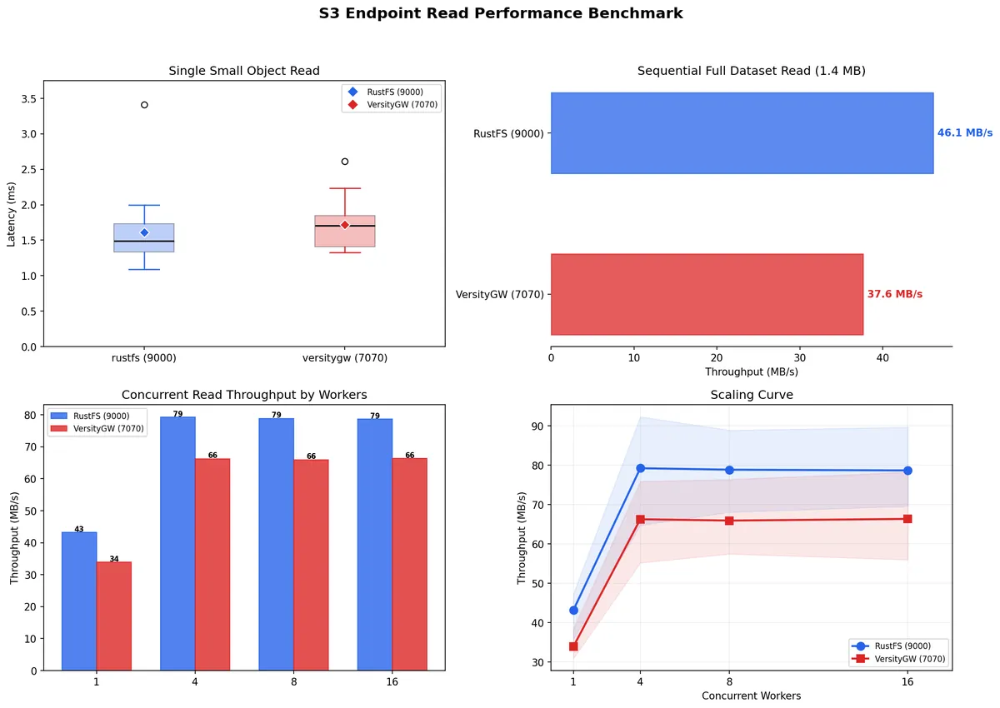
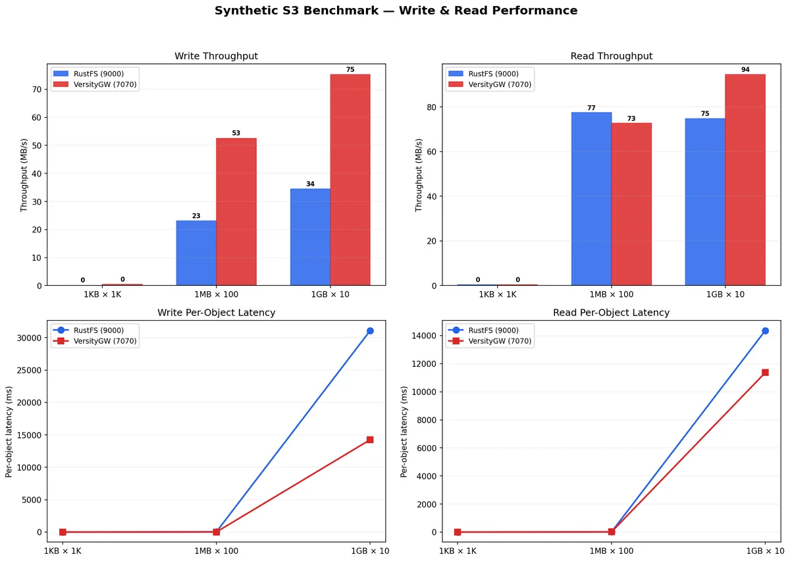
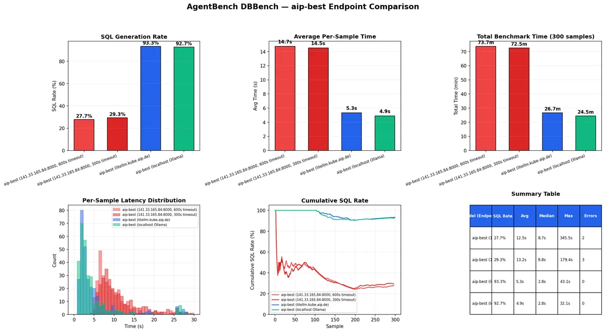
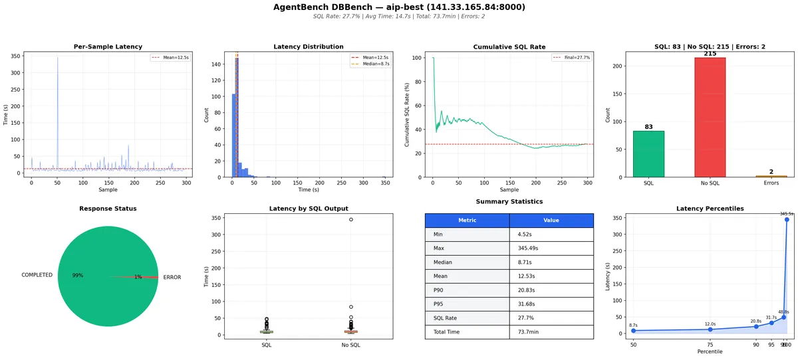
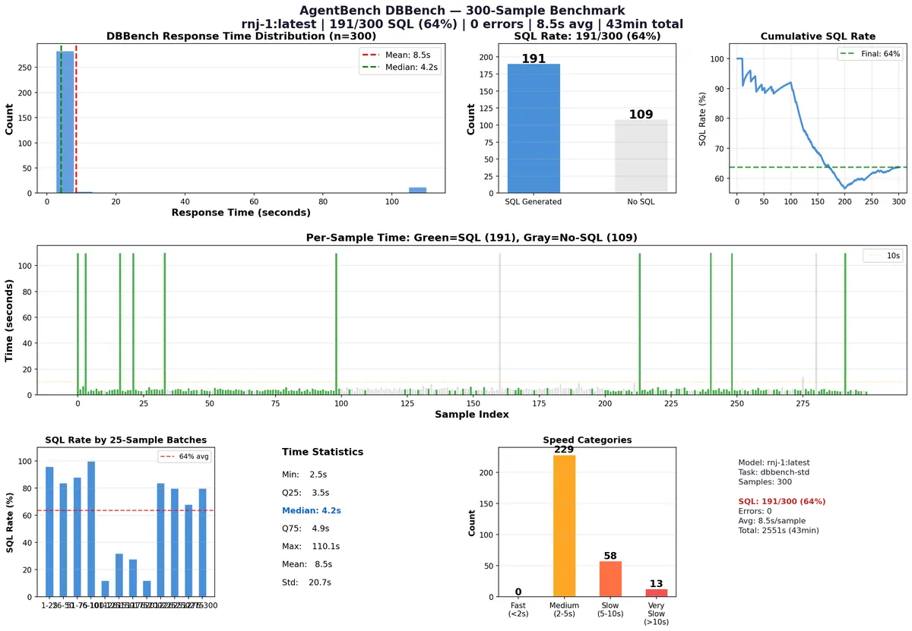

Benchmarks
01 S3-Compatible Object Storage
Head-to-head of two S3-compatible endpoints on the AIP network — RustFS (:9000) vs VersityGW (:7070) — across latency, sequential and parallel workloads, plus synthetic write/read at 1 KB, 1 MB and 1 GB object sizes.

| Metric | RustFS | VersityGW |
|---|---|---|
| Single small object | 1.6 ms | 1.7 ms |
| Sequential full read | 46.1 MB/s | 37.6 MB/s |
| Parallel (1 worker) | 43.2 MB/s | 33.9 MB/s |
| Parallel (4–16 workers) | ~79 MB/s | ~66 MB/s |

Verdict: RustFS is consistently ~20% faster on reads (peaks ≈79 vs ≈66 MB/s), while VersityGW dominates writes — 2–3× faster for 1 MB/1 GB objects, and 14.3 s vs 31.1 s per 1 GB object. Both plateau at 4–8 parallel workers; small objects are inefficient on both.
02 LLM — SQL Generation (AgentBench DBBench)
Standardized 300-sample evaluation on AgentBench DBBench-std (MySQL SQL generation) across AIP LLM endpoints — identical protocol and dashboard for every model.

| Model / endpoint | SQL rate | Avg time | Size |
|---|---|---|---|
| aip-best (Qwen3.6-35B, litellm) | 280/300 (93.3%) | 4.9 s | 36 GB |
| rnj-1 (Gemma3-8B, Ollama) | 191/300 (63.7%) | 8.5 s | 5 GB |


Methodology: 300 tasks, 10 Dockerized DBBench workers, SQL detection over code blocks + inline SQL; VRAM-eviction cold loads (~110 s every ~20 samples on shared GPUs) and tool-definition quirks per model are documented in the repo.
Raw data, plots and runners: github.com/arm2arm/dbbench-benchmarks